Preparation of Accessibility Map
1. Preparing base layer for the study area
Download Master Plan 2014 Subzone Boundary from data.gov.sg and import it into QGIS. To do this, select Layer > Add layer > Add vector layer.
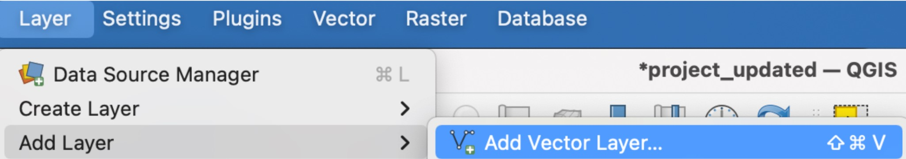
The Data Source Manager dialog window appears. For Vector Dataset(s), select MP14_SUBZONE_NO_SEA_PL.shp.
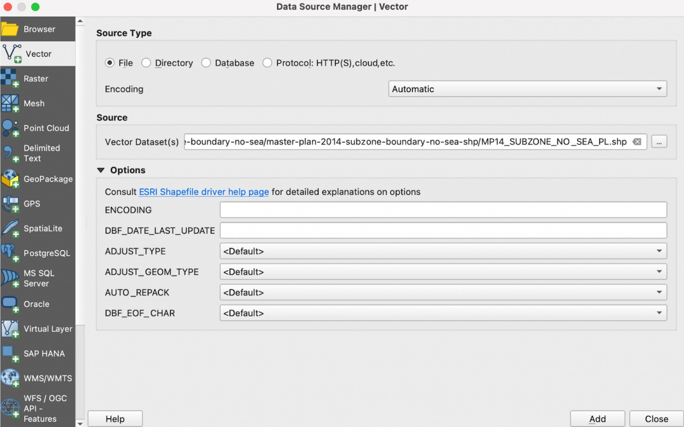
Click Add. Click Close.
Save the layer into GeoPackage format. Right click on the layer and select Export > Save Features As.
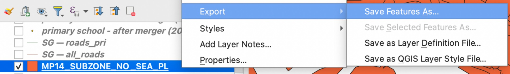
The Save Vector Layer as dialog window appears. For Format, select GeoPackage. For File name, select the SG GeoPackage you previously created. For Layer name, enter MP14. For CRS, select Project CRS: EPSG:3414 - SVY21. Your dialog window should look like the screenshot below.
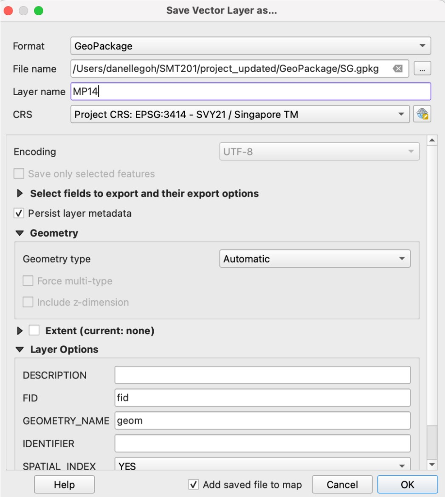
Click OK. Once the layer has been saved into the SG GeoPackage, you can remove the original layer.
2. Preparing schools layer
2.1 Importing data
Import the csv files for education into QGIS. You can start with the file for before the 2015 merger. Select Layer > Add Layer > Add delimited text layer. The Data Source Manager dialog window appears. Open the before merger (2015) CSV file. For Layer name, enter before merger (2015). Under Geometry Definition, select Point coordinates. For X field, select Longitude, and for Y field, select Latitude. For CRS, select EPSG:4326 - WGS 84. Your dialog window should look like the screenshot below.
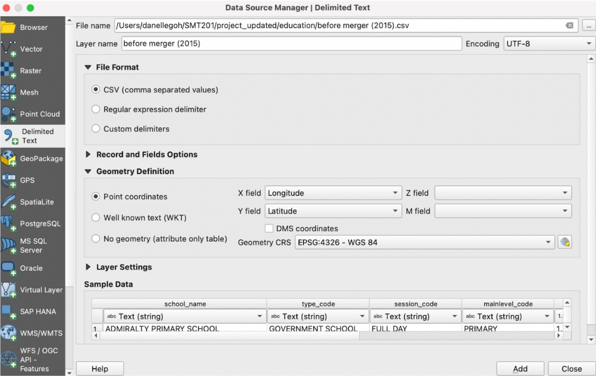
Click Add. Click Close.
Repeat these steps to import the CSVs for the other years – before merger (2017), before merger (2019), and after merger (2019).
2.2. Extracting data for respective school types
You will need to extract the data for each of the school types. For our study, we have decided to analyse 3 types – primary schools, secondary schools, and pre-tertiary institutes (junior colleges and others – such as polytechnics and international baccalaureate (IB) schools).
Let’s start with extracting the primary schools for each year.
Right click on before merger (2015) and select Open Attribute Table. Click on Select features using an expression.
Click on the arrow in front of Fields and Values. Double click on mainlevel_code.
Click on =.
Click All Unique. Double click on PRIMARY.
Your expression box should look like the screenshot below.

Click Select Features. Click Close.
Right click on the layer and save selected features into the SG GeoPackage as bef15_pri.
Repeat these steps above for before merger (2017) (as bef17_pri), before merger (2019) (as bef19_pri), and after merger (2019) (aft19_pri).
Once you have extracted the primary schools for the 4 time periods, repeat these steps to extract secondary schools (with mainlevel_code = ‘SECONDARY’) and pre-tertiary schools (with mainlevel_code = ‘CENTRALISED INSTITUTE’ and ‘JUNIOR COLLEGE’).
3. Extracting and preparing road network layer
3.1 Selecting all road network within the study area
Firstly, we will need to import the roads layer from the OpenStreetMap dataset. Select Layer > Add Layer > Add Vector Layer. The Data Source Manager dialog window appears. Open the gis_osm_roads_free_1.shp file.
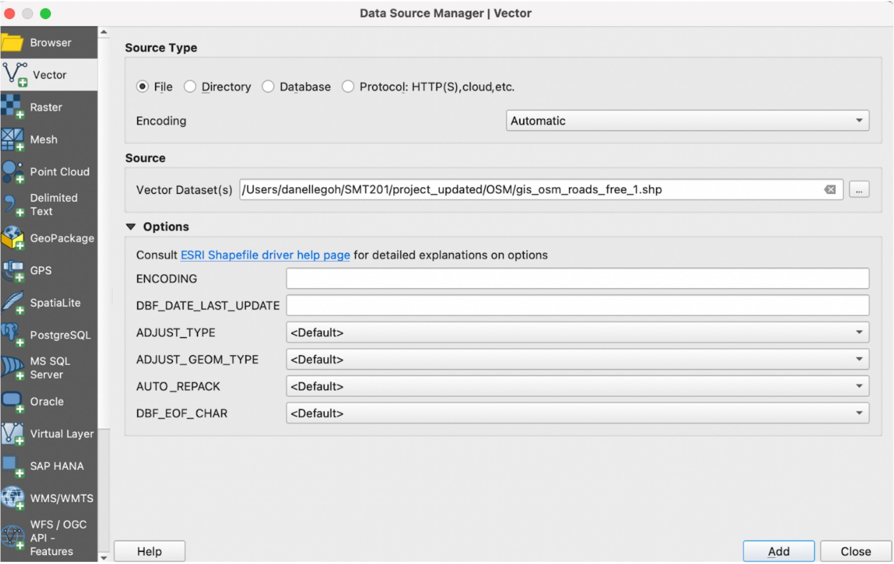
Click Add. Click Close.
Select Vector > Geoprocessing Tools > Clip.
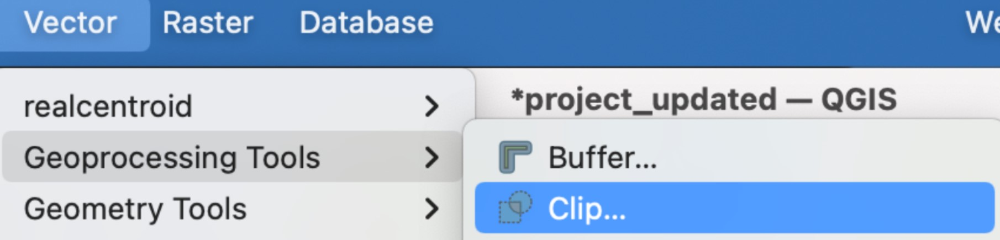
The Clip dialog window appears. For Input layer, select gis_osm_roads_free_1.shp. For Overlay, select MP14. Click on Advanced Options icon. For Invalid feature filtering, select Do not Filter (Better Performance). Your Clip dialog window should look like the screenshot below. When ready, click Run.
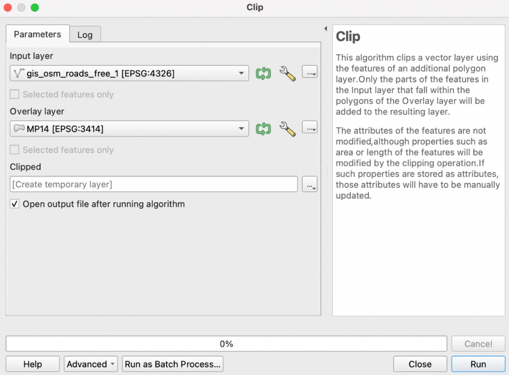
Once the clipped layer has been created, save it into the SG GeoPackage as all_roads. Once saved, remove gis_osm_roads_free_1.shp and the clipped layer.
3.2. Extracting desired road networks
For each of the school types, we will extract different types of roads. For primary schools, we will only be looking at walking paths. For secondary schools, we will be looking at both walking paths and motor vehicle road networks, For pre-tertiary institutes, we will also be looking at both walking paths and motor vehicle road networks.
We will start with extracting the desired road network for primary schools.
Right click on all_roads which we just created, and select Open Attribute Table. Click on Select features using an expression.
Click on the arrow in front of Fields and Values. Double click on fclass.
Click on =.
Click All Unique. Double click on living_street.
Continue entering the different fclass types into the expression box to extract all the roads for walking paths.
- Your expression box should look like the screenshot below.
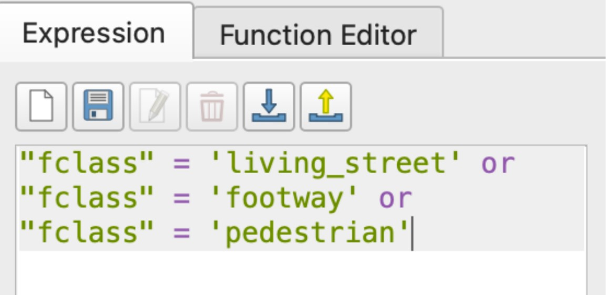
Click Select Features. Click Close.
Right click on the layer and save selected features into the SG GeoPackage as roads_pri.
For secondary schools and pre-tertiary institutes, the steps will be similar as before, except that we will be considering more types of roads. The expression box should look like the screenshot below.
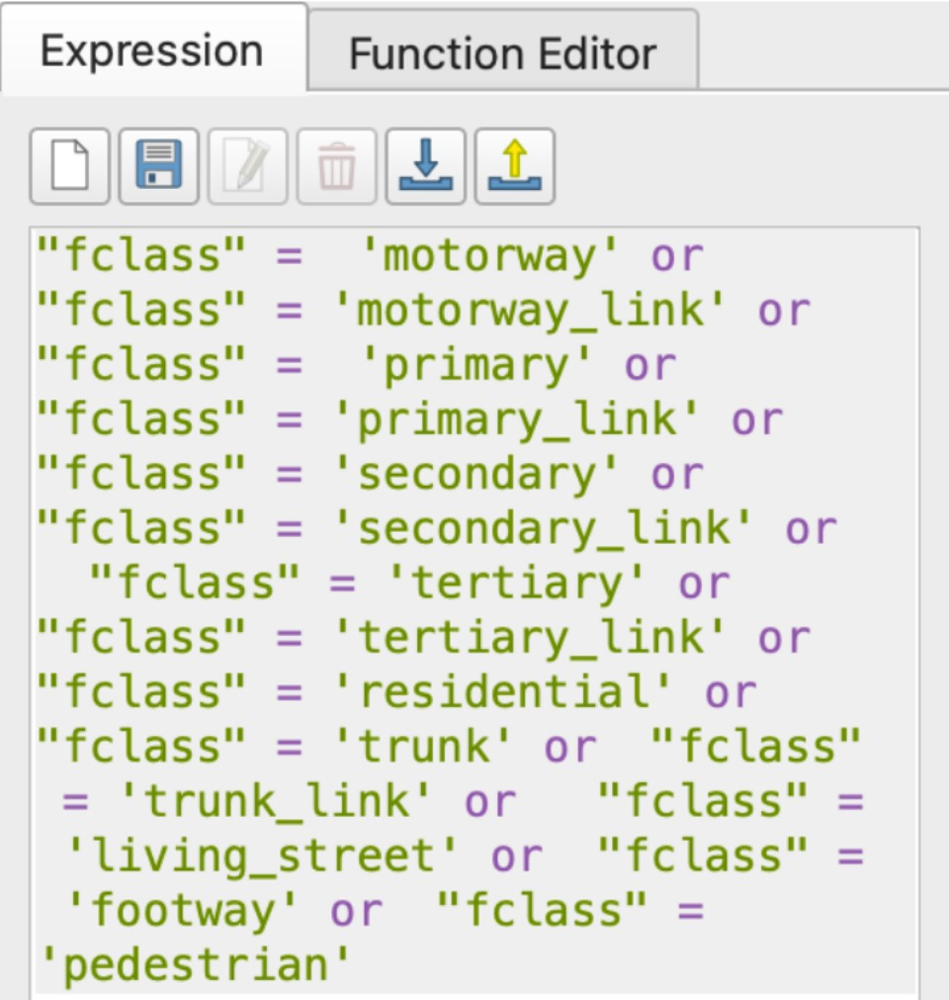
4. Analytical Hexagon
4.1. Creating hexagon layer
Select Vector > Research Tools > Create Grid. The Create Grid dialog window appears. For Grid type, select Hexagon (Polygon). For Grid extent, click on the dropdown and select Calculate from Layer. Select MP14.
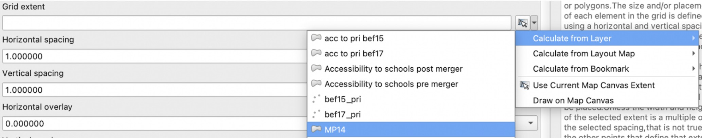
For both Horizontal spacing and Vertical spacing, enter 500. For Grid CRS, select EPSG:3414 - SVY21. Your dialog window should look like the screenshot below. When ready, click Run. Click Close. A temporary layer called Grid is added on to the Layer pane.
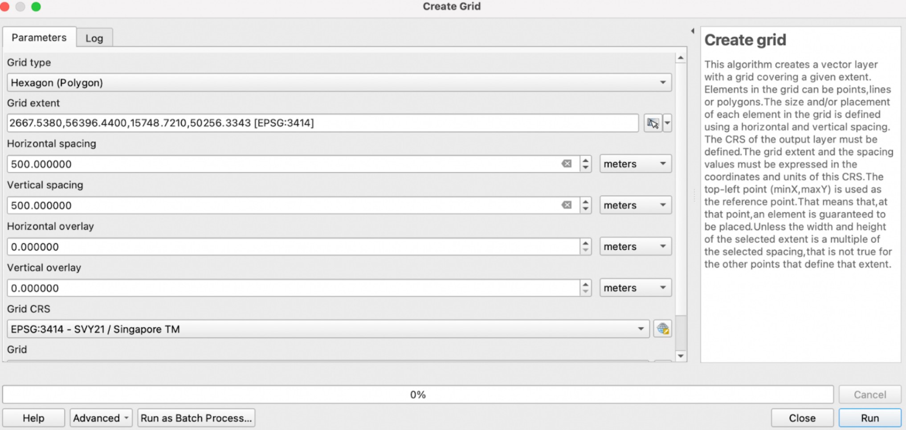
4.2. Editing and saving the hexagon layer
Select Vector > GeoProcessing > Clip. For Input, select Grid. For Overlay, select MP14. Click on Advanced Options icon. For Invalid feature filtering, select Do not Filter (Better Performance). When ready, click Run. Once the clipped layer has been created, save it into the SG GeoPackage as hexagon14. Once saved, remove the Clipped layer and Grid layer.
4.3. Computing and saving the hexagon centroid
Select Vector > Geometry Tools > Centroid. For Input layer, select hexagon14. When ready, click Run. Notice that a new temporary layer called Centroid is added onto Layers panel. Save the layer into SG GeoPackage as hex_centroid14. When done, remove the temporary Centroid layer.
5. Network accessibility analysis with NEAT3
5.1 Working with OD Matrix Tool
Select Processing > Toolbox. At the Search pane, type OD Matrix and select OD Matrix from Layers as Table. We will need to repeat this for each of the point layers for the different years. We can start with bef15_pri. Your dialog window should look like the screenshots below.
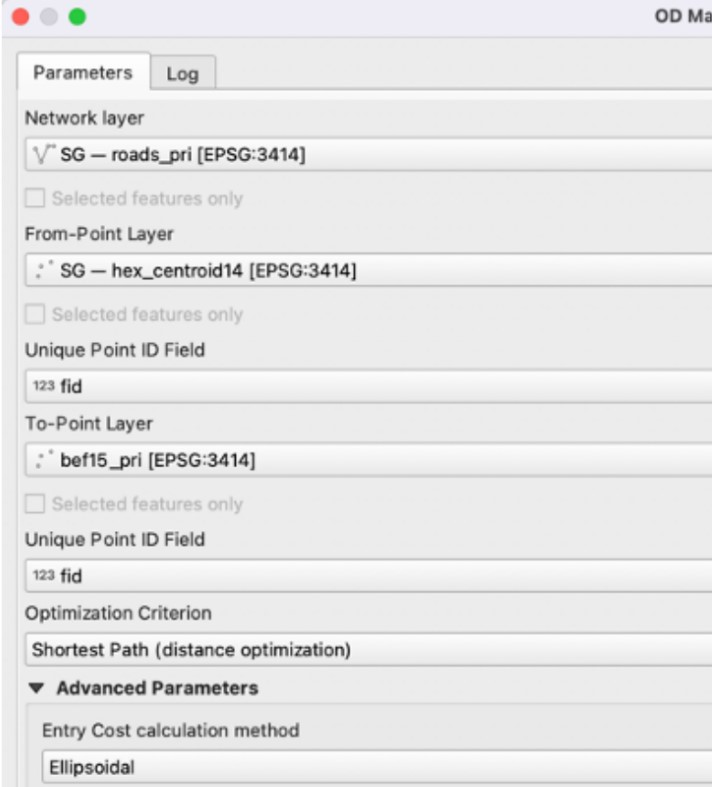
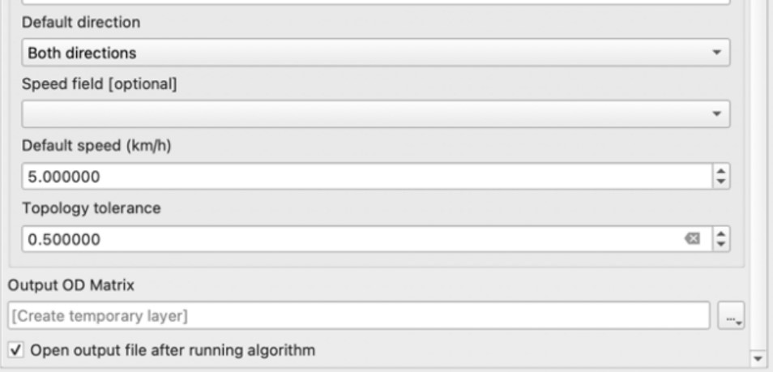
When ready, click Run.
When the process has been completed, save the OD Matrix into the SG GeoPackage as ODmatrix_bef15. You can remove the temporary layer.
Repeat the above steps for bef17 (filename: ODmatrix_bef17), bef19 (filename: ODmatrix_bef19) and aft19 (filename: ODmatrix_aft19).
5.2. Extracting shortest distance pairs
Next, we will use the SQL tool of QGIS to select destination points with the shortest distance. At the Search pane of Processing Toolbox, type SQL. Double click on Execute SQL of Vector general.
Let’s start with ODmatrix_bef15. For Additional input datasources, select ODmatrix_bef15. We will repeat this for the other OD matrices later. In the SQL query box, enter the following statement:
select fid, origin_id, destination_id, min(total_cost) as shortest_distance
from input1 group by origin_id
For Geometry type, select No geometry. When ready, click Run. Notice that a temporary table called SQL Output is added into Layers panel.
Right click on the SQL Output layer and Open Attribute Table. Select Open Field Calculator and select Create a new field. For Output field name, enter shortestdist_num. For Output field type, select Decimal number (real). For the Expression box, enter “shortest_distance”. Click OK and save the changes made.
Save the SQL output into the SG GeoPackage as shortestdist_bef15, and remove the temporary SQL output layer.
Repeat this process for the other years, and save the layers as shortestdist_bef17, shortestdist_bef19 and shortestdist_aft19.
5.3. Mapping accessibility values
5.3.1. Creating a duplicate layer
Before we continue, let us create a duplicate copy of hexagon14 layer. Right click on the layer and select Duplicate Layer. You can rename the layer as “acc to pri bef15”.
5.3.2. Performing relational join
Right click on the acc to pri bef15 layer. Select Properties > Joins > Add. For Join layer, select shortestdist_bef15. For Join field, select origin_id. For Target field, select fid. Your dialog window should look like the screenshot below. When ready, click OK.
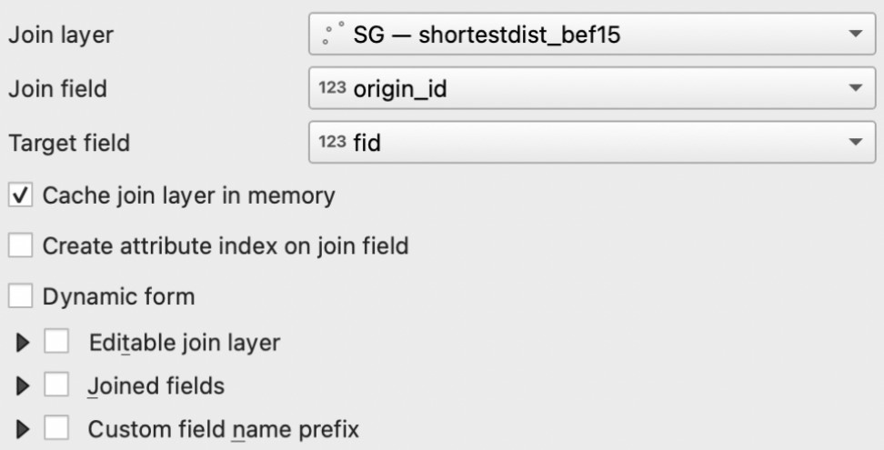
5.3.3. Creating choropleth map
Right click on the acc to pri bef15 layer. Select Properties > Symbology. Select Graduated. For Value, select shortestdist_bef15_shortestdist_num. Change the colour ramp to your preferred colour. For our map, we used blue and inverted the colour ramp. For Mode, select Equal Count (Quantile). Click Classify. Your dialog window should look like the screenshot below.
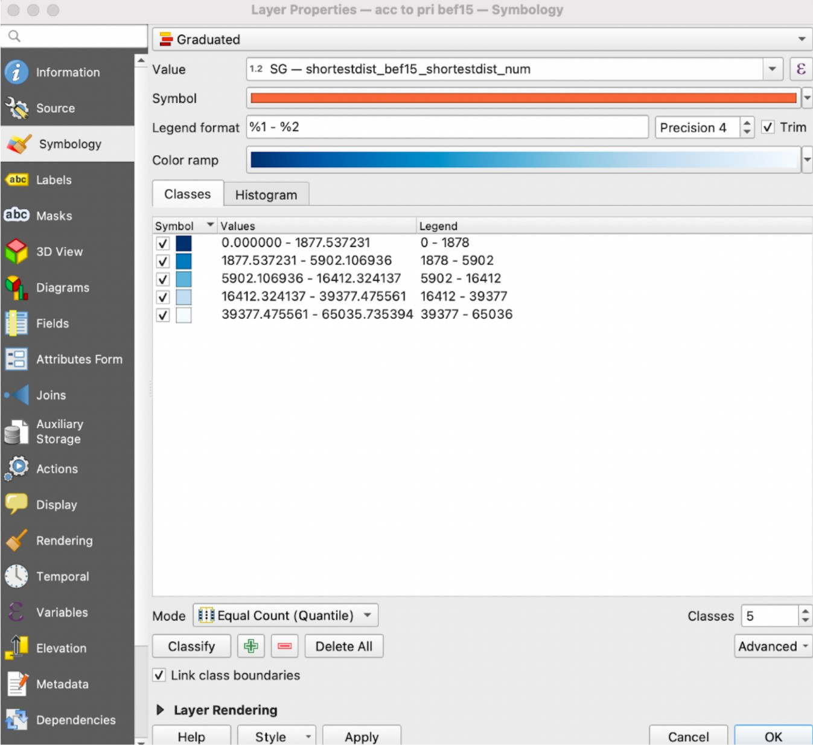
When done, click Apply and click OK.
To view our completed accessibility maps for primary schools, secondary schools, and pre-tertiary instituitions, refer to the ‘Results and Discussion’ tab.